診断後に出たタイプの解説サイトになります！
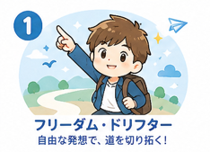
型にとらわれず自由に動く個人主義。決まりごとよりその場の臨機応変さで動き、独創的なアプローチを取ることが多い。
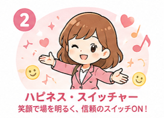
楽しさ優先でムードづくりが得意。顧客や社内の雰囲気を明るくし、場を和ませることで関係を作る。
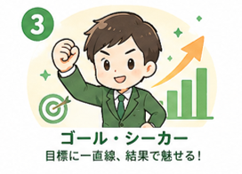
結果至上主義で目標に一直線。戦略を立てて効率的に成果を狙うタイプ。
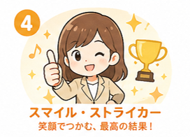
成果も人間関係も両立させるバランス型。勝利を楽しみながら勝ちに行く。
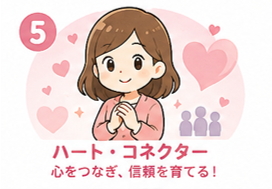
信頼構築を最優先する人情派。顧客の深い課題や想いに寄り添い、関係長期化を目指す。
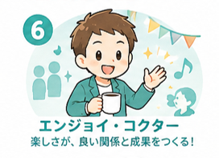
関係重視かつ職場や仕事の楽しさも大切にする人。和やかな関係を長く維持し、成果に繋げる。
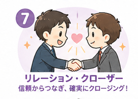
信頼を武器に成果を挙げる実践派。関係構築→クロージングに強い一連の流れを作る。
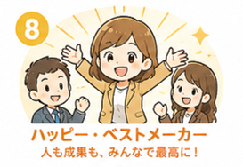
関係・成果・充実をバランス良く追求するチームの太陽的存在。人も結果も両方大切にする。
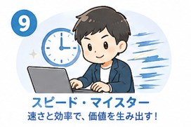
効率と速さを極める合理主義者。業務の回転率を高めて多くの接触を作る。
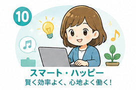
効率化しつつ、チームや自分の働きやすさを重視するスマートワーカー。合理性と快適さの両立を図る。
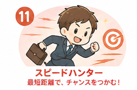
効率で成果を狙う俊足型。短期での勝負どころを見つけ最短距離で受注を取りにいく。
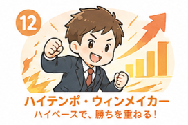
速さと成果を楽しみながら追うアスリート型。ハイペースで勝ちを重ねるのが得意。
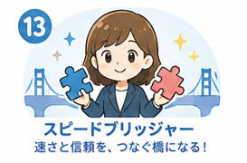
効率と関係性の両立を図る橋渡し役。速さを保ちつつ信頼を損なわない工夫が得意。
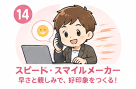
速さと親和性を両立させる実務家。スピード感を持って顧客に好印象を与えるタイプ。
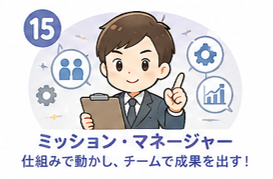
効率・関係・成果を実務レベルで統合する管理型リーダー。目標達成のために仕組みで回す。
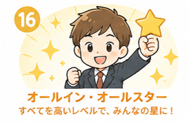
効率・関係・成果・充実、すべてを高い水準で両立できるオールラウンダー。ハイパフォーマーで周囲の模範となる。